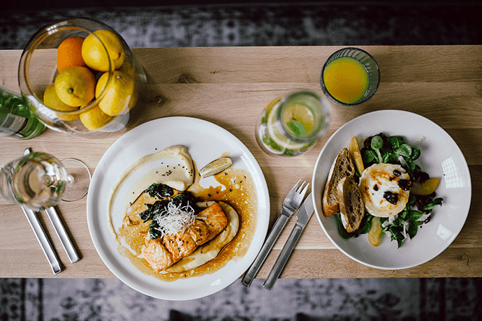

对于大多数超重和肥胖的人来说，想减肥通常每天只需要1200-1500大卡左右就足够了。而最低不能少于1200大卡，否则会对健康有害。
· 早餐320-350大卡
参考分量：
面包2片168大卡+水煮鸡蛋1个80大卡+牛奶1盒135大卡+中等大小苹果1个95大卡=478大卡
黑米粥1碗（200克）136大卡+馒头1个（100克）221.00大卡+鸡蛋1个80大卡=437大卡

注意：
蛋糕一小块通常有热量38多大卡，不是减肥的明智选择。
三鲜馅的水饺一个大约60大卡，10个就是600大卡。
· 上午加餐100大卡左右
参考分量：
酸奶1盒（170克）122大卡
牛奶1盒（250克）135大卡
核桃2个104大卡
开心果7粒118大卡
苏打饼干4片114大卡

· 午餐500大卡
参考分量：
米饭1碗230大卡+小白菜200克34大卡+冬瓜（煮，加盐）200克22.00大卡+炒鸡胸肉150克188大卡=474
注意：
1.通常在外吃的快餐例如白切鸡饭等（有饭、菜和肉搭配好的）一份热量大约700+大卡
2.在外吃的一碗面、粉等大约600-700大卡，汉堡包1个684大卡加上一包薯条和一杯可乐，热量就可以达到一千多大卡了（不是减肥的明智选择）
· 下午加餐100大卡左右
参考分量：
酸奶1盒（170克）122大卡
牛奶1盒（250克）135大卡
核桃2个104大卡
开心果7粒118大卡
苏打饼干4片114大卡
· 晚餐：350-400大卡
参考分量：
水煮玉米1个约200大卡+少油的蔬菜一碗（200克）约50大卡+鱼肉100克约120大卡
注意：
酒精的热量不低一瓶啤酒热量249大卡，有应酬的话悠着点喝。